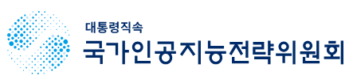

천안 뉴스 모아보기
중앙지부터 지역 언론까지, 천안의 오늘을 확인하세요.
매일 아침 확인하는 천안 기사 · 검색 수집분이며 누락될 수 있습니다.
뉴스를 불러오는 중입니다…
수집 현황과 안내
Google 뉴스 검색에 노출된 기사 중 제목에 ‘천안’이 포함된 기사를 모읍니다. 언론사 전체 기사를 빠짐없이 수집하는 서비스는 아니며, 검색 반영이 늦거나 누락될 수 있습니다. 최근 7일을 검색하고 30일간 보관합니다. 주제는 제목의 키워드로 분류하며, 읽음 표시는 이 브라우저에 저장됩니다.
AX 동향보고서(AI 자동작성)
수집된 정부 부처·천안시 보도자료를 근거로 AI가 천안시 관점에서 자동 작성하는
전체·분기 동향보고서입니다. 매월 1일 갱신되며, 참고용으로만 활용하시기 바랍니다.
※ 시사점과 실행 아이디어는 AI의 제안이며 천안시의 공식 입장이 아닙니다. 사실은 각 항목의 출처 링크로 확인하세요.
전체 동향보고서
분기 동향보고서
AX 주요 동향 — 천안시 관점
정부기관별 AX 활동을 AI가 세부 주제별로 시각화합니다.
AX 세부주제는 수집된 뉴스로부터 자동으로 최적 설계되었습니다.
기관 × AX 주제 히트맵 · 셀 클릭 → 해당 기관·주제 뉴스
최다 주제 TOP 3 · 카드 클릭 → 세부 분류
주제별 트렌드 차트(시계열) — 월별로 AX 뉴스가 어떻게 늘어왔는지, 그리고 12개 세부주제 각각이 최근 어느 방향으로 움직이는지 한눈에 봅니다.
전체 AX 뉴스 추이 · 월별 수집 건수
세부주제별 추이 · 각 카드의 색 점 = 이번 달, 선 = 최근 추이
키워드 관계망
· 최근 6개월 AI 요약에서 추출 · 같은 보도자료에 함께 등장한 키워드를 선으로 연결
보도자료 Top 10 부처 추이(전월 누적 기준)
· 기관마다 규모가 달라 카드별로 y축을 따로 잡음(카드 아래 최고치 표기)
주요 정책 마일스톤 타임라인
AI전환의 이정표가 되는 주요 보도자료들을 AI가 시간순으로 정리했습니다.
영역별 진행 흐름 · 마우스를 올리면 상세 내용 · 제목을 클릭하면 AI 요약문 팝업
마일스톤 상세 · 제목을 클릭하면 AI 요약문 팝업
정렬
선택한 영역에 해당하는 마일스톤이 없습니다.
천안시의 인공지능 전환(AX)을 위해 정부 부처와 천안시의 AI 보도자료를
함께 자동 수집·분석하는 서비스입니다.
중앙부처 정책 동향을 참조해 천안시에 맞는 정책을 설계하고, 천안시가 그동안 추진해 온
AI 사업을 한 화면에서 확인할 목적으로 제작되었습니다.
기획부터 배포까지 바이브코딩 방식으로 개발되어 사이트 운영에 미숙한 점이 있더라도
양해 부탁드립니다.
수집·판정 기준
- 1순위(제목 키워드): 제목에
인공지능 · AI · AX · AI 에이전트 · 인공지능 에이전트등이 있으면 자동 수집. - AX 밀접(판정): 제목에 키워드가 없어도 인공지능 전환과 밀접하면 수집. 제목에
데이터가 있고 AI 관련이면 포함. - 출처: 1차 대한민국 정책브리핑(korea.kr), 보강으로 각 기관 공식 채널(공식 도메인
.go.kr/korea.kr로 한정). - 천안시: 정책브리핑은 지자체 보도자료를 다루지 않아, 천안시 누리집 보도자료를 제목 키워드(
인공지능 · AI · AX · 생성형 · 빅데이터 · 스마트시티 · 자율주행 · 로봇등)로 직접 수집합니다. 축산 방역의AI(조류인플루엔자)는 제외합니다.
환각·허위 방지
- 모든 항목은 원문 URL·발행일·출처를 보존합니다.
- AI 리포트는 수집된 뉴스에서 확인되는 내용만 기술하며, 각 서술에 출처를 답니다.
- 확인되지 않는 사실은 생성하지 않고 "확인된 뉴스 없음"으로 표기합니다.
유용한 누리집 목록
대통령직속 위원회1
데이터, 사업 플랫폼4
중앙부처 및 지방정부 지원사업2
MSIT
과학기술정보통신부 · 정보통신산업진흥원
2026년 공공 AX 프로젝트 사업 공고
접수마감 26년 2월
MOIS
행정안전부 · 한국지능정보사회진흥원
공공부문 AI 서비스 지원사업
접수마감 26년 2월
외부 누리집으로 연결되며, 공고 일정·내용은 각 기관 안내를 기준으로 확인해 주시기 바랍니다.